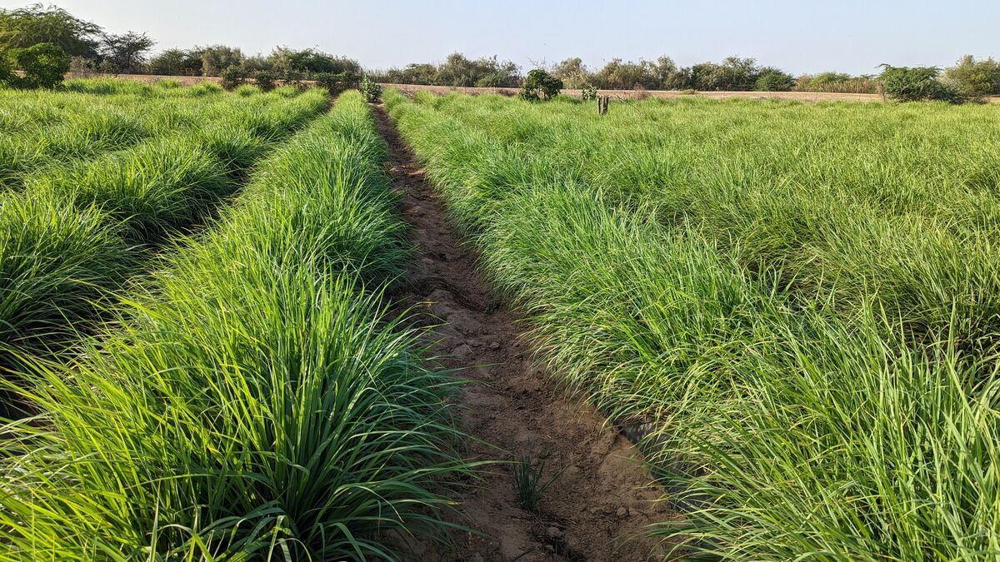
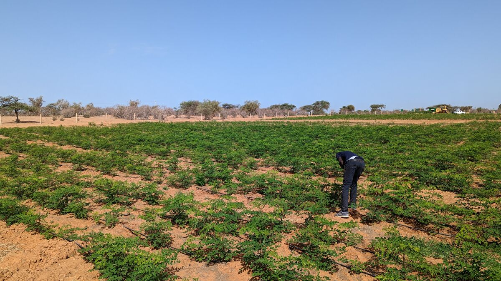
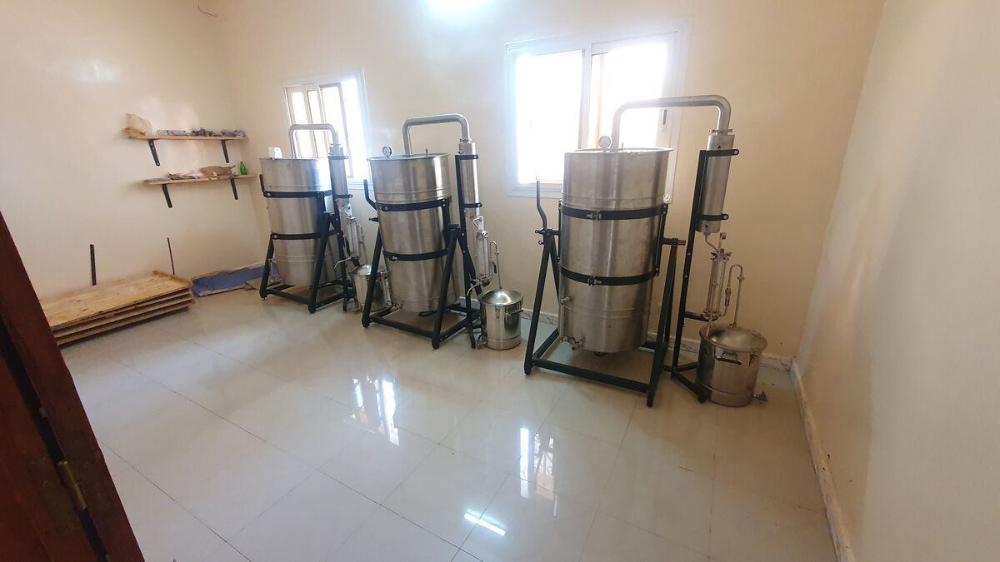
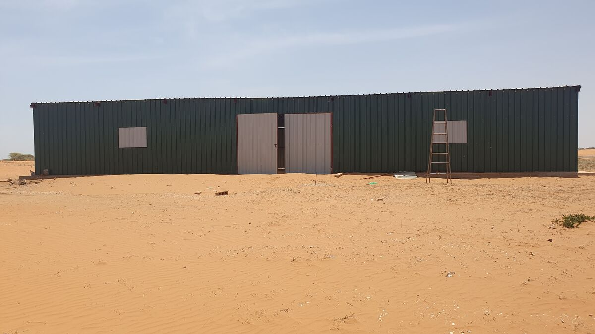
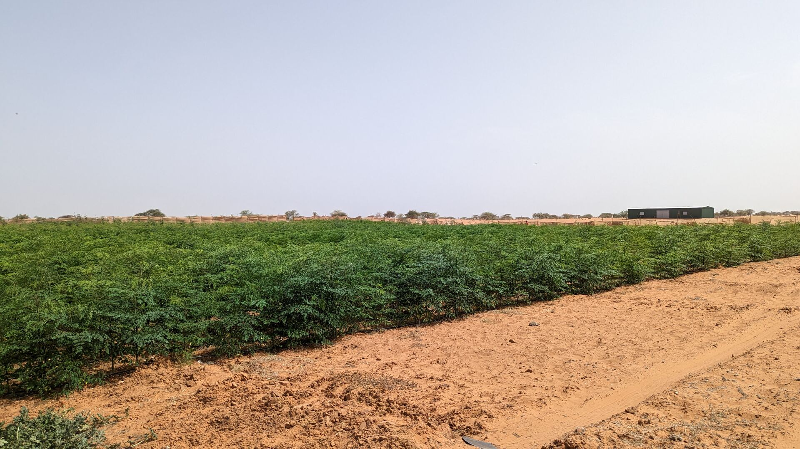

Agro Industrie Sénégalaise SA cultive la mangue et le moringa sur un domaine de 196 hectares dans la région de Saint-Louis, transforme sur site — fruits séchés, purées, huiles — et valorise chaque sous-produit dans un modèle en circuit fermé, zéro déchet.Agro Industrie Sénégalaise SA grows mango and moringa on a 196-hectare estate in the Saint-Louis region, processes on site — dried fruit, purees, oils — and turns every by-product into value in a closed-loop, zero-waste model.
Nos activitésOur activities Espace investisseursInvestor relationsAIS est une société anonyme sénégalaise qui développe, dans la région de Saint-Louis, une plateforme agro-industrielle intégrée : cultures de mangue et de moringa, transformation sur site en ingrédients d'exportation premium, et un élevage ovin intégré dont le fumier fertilise le domaine aux côtés du compost produit sur place.AIS is a Senegalese société anonyme developing an integrated agro-industrial platform in the Saint-Louis region: mango and moringa cultivation, on-site processing into premium export ingredients, and an integrated sheep operation whose manure fertilizes the estate alongside compost produced on site.
Une phase d'essais menée de 2021 à 2025 a validé les sols, l'irrigation, la culture et la transformation du moringa, la distillation d'huiles essentielles et les procédés de transformation de la mangue — avant tout déploiement à grande échelle.A trial phase from 2021 to 2025 validated soils, irrigation, moringa cultivation and processing, essential-oil distillation and mango processing routines — before any deployment at scale.

De la culture à la transformation et à l'exportation, chaque filière alimente les autres — les noyaux deviennent de l'huile, les résidus deviennent énergie et compost, l'élevage fertilise les cultures.From cultivation to processing and export, each stream feeds the others — kernels become oil, residues become energy and compost, livestock fertilizes the crops.
Mangue et banane transformées sur site en fruits séchés et purées destinés aux marchés d'exportation, avec une montée en capacité progressive.Mango and banana processed on site into dried fruit and purees for export markets, with capacity scaling progressively.
Huile pressée à froid à partir des noyaux issus de la transformation — un ingrédient cosmétique premium, sans coût de matière première additionnel.Cold-pressed oil from kernels recovered in processing — a premium cosmetic ingredient with zero extra raw-material cost.

Huile pressée à froid, feuilles et tourteau issus de parcelles de moringa validées par quatre années d'essais culturaux.Cold-pressed oil, leaves and oil cake from moringa plots validated by four years of field trials.

Distillation sur site de cultures aromatiques comme la citronnelle, sous la marque Puralis Essentials — testée sur le marché européen depuis 2022.On-site distillation of aromatic crops such as lemongrass under the Puralis Essentials brand — market-tested in the EU since 2022.
Élevage lancé en 2025, orienté vers le marché de la Tabaski — volumes en races mixtes et premium Ladoum — dont le fumier fertilise le domaine.Launched in 2025 and focused on the Tabaski market — mixed-breed volume and premium Ladoum — with manure fertilizing the estate.

Bâtiments de transformation et de stockage, irrigation goutte-à-goutte alimentée par une conduite dédiée de 2 km, brise-vents et pistes d'accès.Processing and storage buildings, drip irrigation fed by a dedicated 2 km pipeline, windbreaks and access roads.
Chaque production alimente la suivante : les sous-produits deviennent énergie, aliment du bétail ou fertilisant, et reviennent aux cultures.Every process feeds another: by-products become energy, animal feed or fertilizer, and return to the fields.
AIS réunit des compétences en agronomie, en transformation agro-alimentaire, en élevage et en gestion, présentes au quotidien sur le domaine de Saint-Louis.AIS brings together agronomy, agro-processing, livestock and management expertise, present daily on the Saint-Louis estate.
Pilote la stratégie, les partenariats et le développement du domaine depuis 2018.Has led strategy, partnerships and the estate's development since 2018.
Conduit les campagnes mangue et moringa, l'irrigation et les équipes de terrain.Runs the mango and moringa programs, irrigation and field teams.
Supervise le séchage, les purées, la pression des huiles et la distillation.Oversees drying, purees, oil pressing and distillation.
Gère le cheptel, la sélection Ladoum et l'intégration élevage-cultures.Manages the flock, Ladoum breeding and crop-livestock integration.
Assure la gestion financière, administrative et la conformité de la société.Manages the company's finance, administration and compliance.
Conduit la qualité produits et le pipeline de certification Fair Trade et Bio.Leads product quality and the Fair Trade and Organic certification pipeline.
Adossée à un domaine de 196 hectares sous bail d'État de longue durée et à une phase pilote achevée, AIS prépare le déploiement à grande échelle de ses cultures et de sa plateforme de transformation.Backed by a 196-hectare estate under a long-term State lease and a completed pilot phase, AIS is preparing the full-scale deployment of its crops and processing platform.
Un mémorandum d'investissement complet — plan d'affaires, modèle financier et rapports de valorisation indépendants — est disponible pour les investisseurs qualifiés, sur demande. Des visites de site peuvent être organisées.A full investment memorandum — business plan, financial model and independent valuation reports — is available to qualified investors on request. Site visits can be arranged.
Demander le mémorandumRequest the memorandum
Acheteurs d'ingrédients, partenaires techniques, institutions ou investisseurs : notre équipe est à votre écoute.Ingredient buyers, technical partners, institutions or investors: our team is at your service.
Région de Saint-Louis, nord du Sénégal · à ~285 km du port de Dakar · 6 à 8 jours de fret maritime vers les marchés européens · franc CFA arrimé à l'euro.Saint-Louis region, Northern Senegal · ~285 km from Dakar port · 6–8 days by sea freight to European markets · CFA franc pegged to the euro.